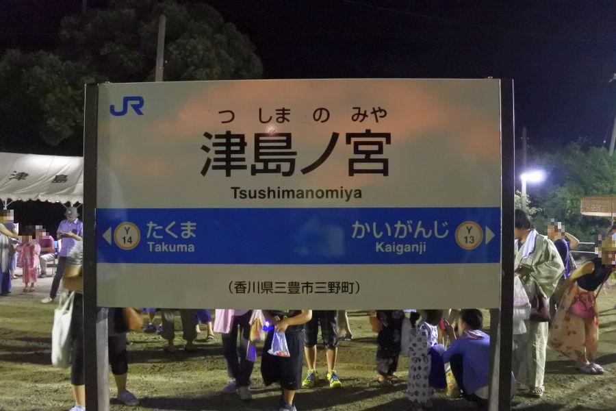
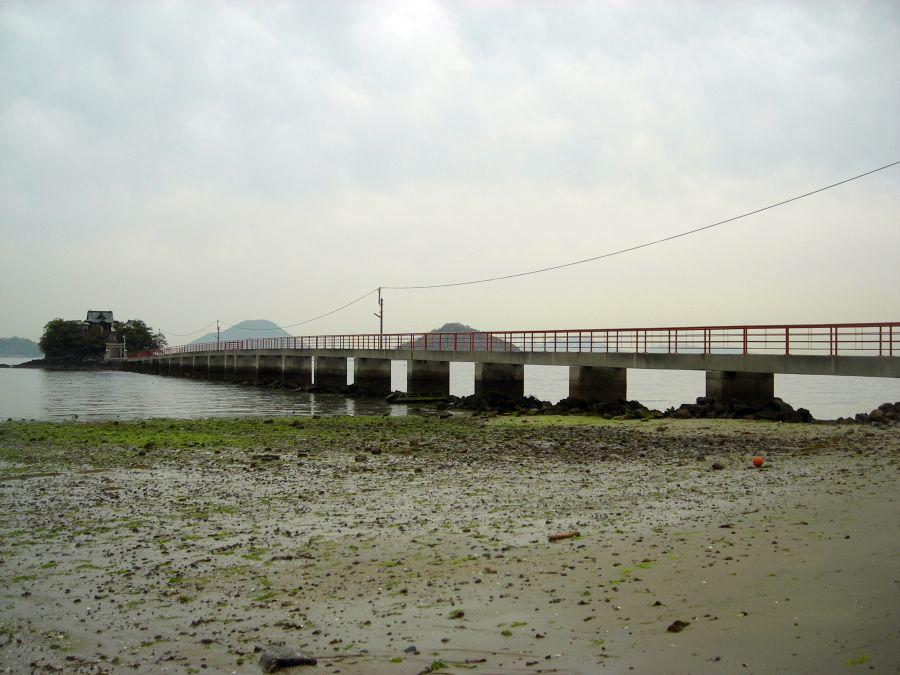
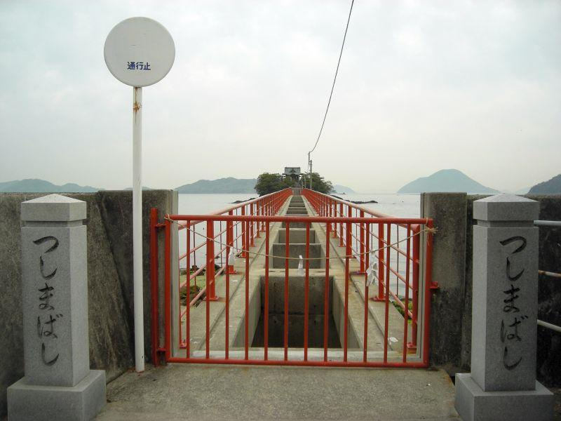
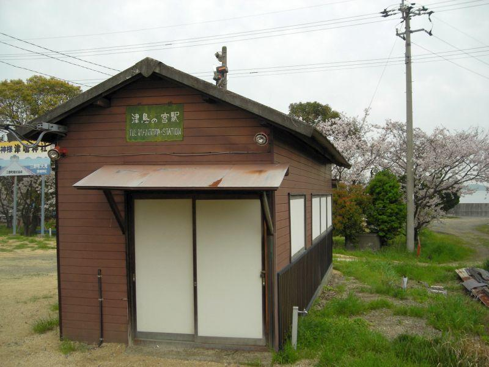
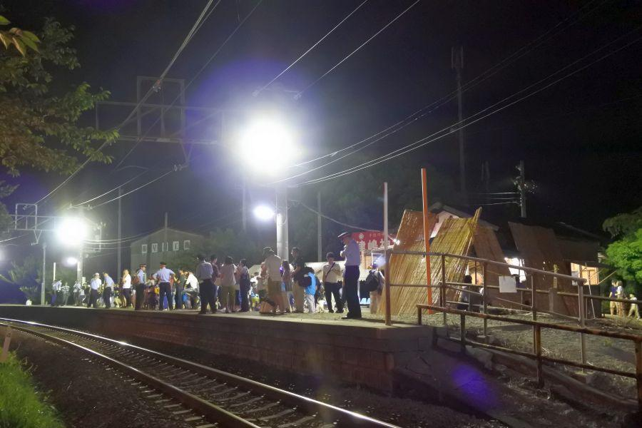
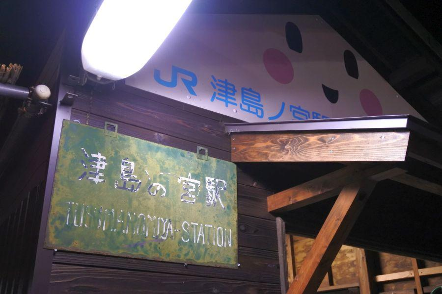
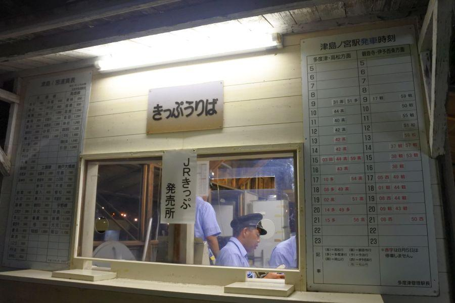
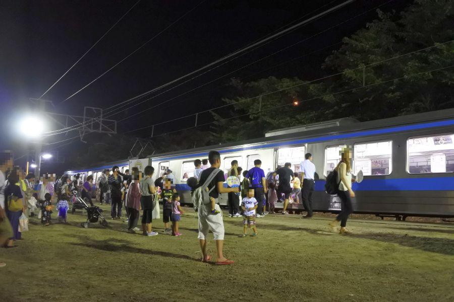

一年で二日だけ！ 日本一営業日が短い駅 < 津島ノ宮駅 / 香川県三豊市三野町 >

JR四国には 夏期以外の列車時刻表に掲載されていない、
「一年で最も営業日が短い駅」
が存在します。
二日しか無い営業日は大勢の人々で賑わいますが、どういうことでしょうか。
一年二度、海を渡って 島のお宮さんへ

津嶋神社(つしまじんじゃ / 香川県三豊市三野町)
瀬戸内海に浮かぶ津島と津嶋神社本殿。そしてそこへ向かって延びる橋。長さは約250mあります。

橋のたもとに立ってみます。
一年のうち363日は入口が封鎖され、橋桁を覆う板も外されています。
ここが通行可能になるのは、津嶋神社大祭が行われる二日間だけです。
(臨)津島ノ宮駅

(臨)津島ノ宮駅(つしまのみやえき / 香川県三豊市三野町)
JR四国に二つある臨時駅の一駅。例年、8月4日と5日の二日間行われる 津嶋神社の大祭の時だけの営業。
普段はご覧の通り、一年二度の営業日に備えて 長い眠りについています。
臨時駅...
海水浴など夏期のみ営業される駅... 田井ノ浜駅(牟岐線 / 徳島県)など
スキー場など冬期のみ営業される駅... ヤナバスキー場前駅(大糸線 / 長野県)、ガーラ湯沢駅(上越線 / 新潟県)など
イベント開催日に営業される駅... 津島ノ宮駅(予讃線 / 香川県)、バルーンさが駅(長崎本線 / 佐賀県)、鹿島サッカースタジアム駅(鹿島線 / 茨城駅)など
普段は 閑散としているこの場所も、

大祭が行われる二日間は、大勢の参拝客で賑わいます。
駅自体がカーブに設置されているため、列車の乗降はホームとの隙間が大きいので注意が必要。
そのためこの日ばかりは 大勢の駅員さんたちが同駅に派遣されて、乗降整理が行われます。

"津島の宮駅" と記されたホーローの駅看板
経年使用による色褪せ具合と 国鉄で用いられていたフォントが、マニアにはたまりません！
駅名は 「津島ノ宮」と、送り仮名「ノ」は片仮名が正しい。けれど駅の顔である こちらの駅名標は、平仮名「の」。
公式表記と違う点が見逃せません。
大正4年(1915) 津島ノ宮仮乗降所
昭和44年(1969) 臨時駅化
平成27年(2015) 開業100年

一年二度の駅開業に赴任する、多度津駅所属の職員さんたち。
その営業日数の少なさからか、駅事務所にエアコンはありません(現在は異なるかもしれません)。
一年に二回ある津島ノ宮駅の任務は 大変な業務です。

列車到着。
この日のために増結運転されているのですが、津島ノ宮駅で 一時的に満員列車になります。
ちなみに、津島ノ宮駅の平均乗車人員は 約5名。
↑これ、どう見ても5名以上いますよね。
そのカラクリは、平均乗者人員の算出方法が
合計乗車人数 ÷ 365(または366)
で計算されるため。
津島ノ宮駅は一年で二日間の営業。仮に二日間で1800人乗ったとすると、一年の平均乗車人員は約5人になるわけです。
平成最後の夏期大祭は、両日とも週末日程
津嶋神社夏の大祭は 毎年8月4日・5日の二日間の開催。
これは 平日/週末 関係ありません。
それでいくと、今年 平成30年(2018)の 大祭日は
8月4日 土曜日
8月5日 日曜日
と、両日とも週末になっています！
多くの方が行き易い曜日であることから、例年より多くの参拝客で賑わうことでしょう。
次回の週末が該当する年は、
2019... 8/4(日)、5(月)
2023... 8/4(金)、5(土)
2024... 8/4(日)、5(月)
2028... 8/4(金)、5(土)
2029... 8/4(土)、5(日)
大祭両日が週末なのは、11年後です。
これを機に、平成最後の津嶋神社大祭に出かけてみては いかがでしょう。
アクセスは 日本一営業日の短い津島ノ宮駅をご利用ください。
(臨)津島ノ宮駅
< 自家用車 >
高松駅から 約1時間、46km
高松空港から 約50分、43km
< 公共交通機関 >
(臨)津島ノ宮駅降車 8月4日・5日のみの営業
※ 周辺に有料駐車場はありますが、神社からは遠い場所になることと 周辺の渋滞緩和のため、列車での訪問が呼び掛けられています
※ 豪雨災害の影響で、列車ダイヤが通常と異なります。事前にご確認ください JR四国列車運行情報
※ 主な地点からの最速・最短距離